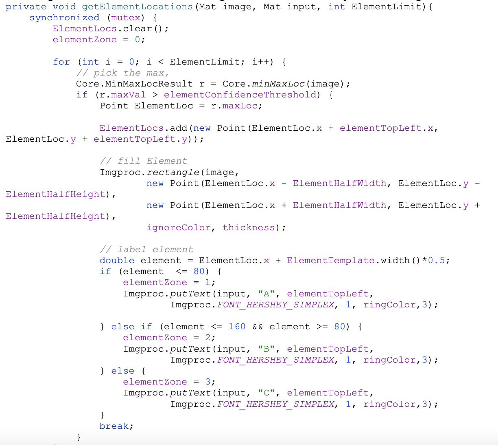

Each library has its strengths and weaknesses. Vuforia was accurate, but only for stationary images. TensorFlow was inaccurate, but fast. OpenCV was much more accurate and still processed quickly.
The Vuforia Engine detects and tracks an image by comparing extracted natural features from our live feed against our compiled image database of an element.
Given the live camera stream, we used TF to create an object detection model that can identify which of a known set of objects might be present and provide information about their positions within the image.
OpenCV is a huge open-source library for computer vision, machine learning, and image processing. We take live footage from the robot controller phone and feed it through a pipeline. Then, using a comparative image overlay, the algorithm calculates if and where certain elements are on the field. It compares the live images with custom template images to determine confidence rate based on shape, color, and size. Here is an example of our implementation.
